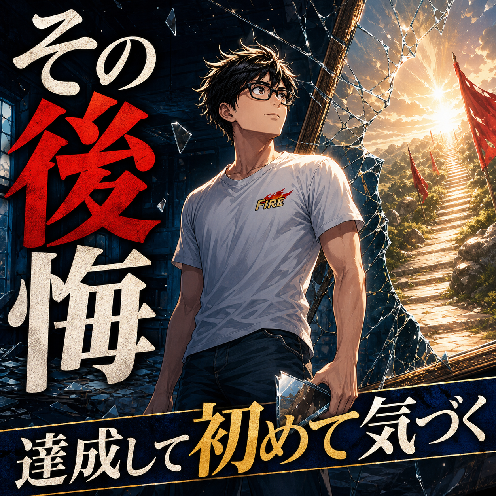

FIRE COLUMN
FIRE後に後悔することは？達成して初めて見える落とし穴

.png) RELATED ARTICLE
FIREしたい理由を聞いてみて、僕が考え直したこと
「なぜFIREしたいのですか？」と聞かれたとき、資産額や利回りの話だけでは答えきれない人が多いのではないでしょうか。のんびりしたい、家族と過ごしたい、働く量を自分で決めたい。反対に、定年まで働きたくない、忙しすぎる、お金が不安という理由もあります。
wakuwaku-fire-git.pages.dev ↗
RELATED ARTICLE
FIREしたい理由を聞いてみて、僕が考え直したこと
「なぜFIREしたいのですか？」と聞かれたとき、資産額や利回りの話だけでは答えきれない人が多いのではないでしょうか。のんびりしたい、家族と過ごしたい、働く量を自分で決めたい。反対に、定年まで働きたくない、忙しすぎる、お金が不安という理由もあります。
wakuwaku-fire-git.pages.dev ↗
 COMMUNITY
FIREを本音で話せる場所
ワクワクFIRE道。FIREや自由な人生を目指す人が交流できるコミュニティ。
community.camp-fire.jp ↗
COMMUNITY
FIREを本音で話せる場所
ワクワクFIRE道。FIREや自由な人生を目指す人が交流できるコミュニティ。
community.camp-fire.jp ↗
FIRE後に後悔することはあるのか。2年半ゲーム中心の生活で生活の軸を失った経験、資産の変動で考え直した家族との向き合い方から、達成後の落とし穴を整理します。
まいど！ワクワクFIREのまるです。
「FIREできたら、後悔なんて一つもないんやろな」
そう思っている人もいるかもしれません。会社を辞めるほどの資産を作ったんだから、あとは自由に遊ぶだけ。僕も最初は、そんな感じで浮かれていました。
でも、FIRE後に後悔することは普通にあります。僕の場合は、会社を辞めてから2年半、ゲーム中心の生活になり、思考力や会話の感覚、困難へ向かう勢いが落ちました。FIREそのものを後悔しているわけではないけど、自由を持て余した時間は、今でも「あれはやりすぎたな」と思います。
一番大きかった後悔は、自由を休みと勘違いしたこと
会社員のころは、仕事が終われば休みです。やることとやらないことの境目が、外から決まっていた。FIREすると、その境目が全部自分に返ってきます。
最初は気持ちいい。昼まで寝ても怒られない。ゲームをしてもいい。予定を先延ばししても、誰かから締め切りを迫られない。ところが、それが長く続くと、休んでいるのか止まっているのか分からなくなる。
僕は2年半もダラダラしてしまった。楽しかった部分はあります。でも、もっと早く人と話し、何かを作り、体を動かしていればよかった。自由は、休みを無限にするためのものではなく、選んだ時間へ使うためのものなんやなと後から分かりました。
能力は使わないと、ほんまに鈍る
働くことには、収入以外の役割もあります。人と話す、考える、期限までに終わらせる、嫌なことでも一度は向き合う。毎日やっていると気づきにくいけれど、能力を動かす場になっていた。
僕はFIRE後にコミュニティのオンライン飲み会や勉強会を始めた時、トーク力の低下を実感しました。昔ならもっと軽く返せた場面で言葉が出てこない。頭の回転も舌の回転も足らん。
「働かない＝悪」ではありません。ただ、使わない能力は鈍る。仕事を辞めるなら、仕事以外の場所で考える・話す・作る機会をどう置くかを先に考えたほうがいいです。
後悔しても、FIREをなかったことにはしない
2025年3月、FIRE5年目の振り返りで、僕は総合的にはFIREして良かったと書きました。時間の濃度が薄くなることや、人と会う機会が減ることはあっても、選んだ活動や家族との時間には大きな価値があったからです。
一方で、2026年2月には資産が大きく減り、妻の不安や子どもの存在を受けて、現物やレバレッジを売却し「FIRE卒業」と表現しました。過去の結論を一言で上書きしたわけではありません。条件が変われば、FIREの形も見直す必要があると分かった出来事です。
後悔があるから失敗、ではない。うまくいかなかった部分を認めて、次の形へ変える。そこまで含めてFIRE後の人生やと思っています。
後悔しやすい人は、退職後の予定を作っていない
FIRE後にやりたいことを、ぼんやり考えるだけでは足りません。旅行、読書、ゲーム、趣味。どれも楽しそうですが、毎日自動で続くとは限らない。
週に一度は人と話す。午前中に一つ作業をする。月に一回は新しい場所へ行く。これくらいの予定を先に置いておくと、自由がただの空白になりにくいです。
厳しい時間割はいりません。自分で破れるくらいの柔らかい約束でいい。自由すぎると溺れるなら、自分で浮き輪を持っておく。僕の場合、それが発信やコミュニティ、今は家事育児でもあります。
資産の後悔は、金額よりルールのなさから来る
資産が減ることは、FIRE後の大きな不安です。僕も大きな下落を経験し、売った直後に価格が戻って悔しい思いをしました。ただ、後悔の中心は「もっと増やせたか」だけではない。家族が不安を抱える状態までリスクを取ったことでした。
いくらまでなら生活を守れるのか、下落したら何を売るのか、働く選択をいつ戻すのか。事前にルールを作っておく。完璧な正解はなくても、気分だけで判断する場面は減らせます。
家族のいるFIREは、自由を一人で採点できない
自分が満足していても、家族が不安なら、家庭全体としては安心できません。妻や子どもの気持ちを勝手に代弁するつもりはありませんが、生活を共有する人とリスクや働き方を話すことは必要です。
僕は子どもが生まれてから、資産の増加だけでなく、家族に心配をかけないことを強く意識するようになりました。FIREは自分の自由を買うだけでなく、家族へ渡せる余白を作ることでもあるからです。
後悔を小さくするために、今からできること
退職前に、平日の昼をどう使うか試す。誰と話すか決める。体を動かす習慣を作る。生活費の最低ラインと、相場が悪い時の調整案を用意する。
そして、何かを始めて合わなかったら、やめてもいい。僕は会社、YouTube、コミュニティ、文章、いろいろ試してきました。全部が続いたわけではないけど、試したから次の方向が分かった。
FIRE後の後悔は、人生を作り直す材料になる
FIRE後に後悔することはあります。自由を持て余す。能力が鈍る。人と会わなくなる。資産の下落で不安になる。家族との温度差に気づく。
でも、そこで「会社員へ戻るしかない」と決める必要もない。少し働く、活動を変える、予定を置く、人と会う。自分の暮らしへ手を入れ直せばいい。
僕は後悔を消そうとはしていません。失敗したらネタにして、次の一手へ変える。FIREは達成した瞬間に完成するものではなく、後悔も含めて何度も調整する生き方なんやと思います。